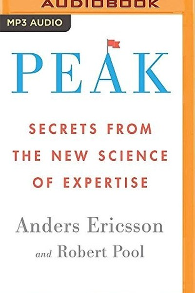

Library › Self-Improvement
Peak — Summary & Key Lessons

The science of expertise — how anyone can master anything.
📖 OPEN THE FULL INTERACTIVE BREAKDOWN →🌐 Read it in Hindi, Hinglish, Gujarati, Tamil & 22 more languages — free, with audio.
💡 The Big Idea
The 10,000-hour rule got it half right: hours matter, but the kind of practice matters more. Ericsson's research shows experts are made, not born — through deliberate practice: focused work at the edge of ability, with immediate feedback and constant refinement. The brain and body adapt to training like muscles do. The book is a demolition of the talent myth and a practical manual for getting better at anything.
🧠 The 7 Key Lessons
Lesson 1: The Talent Myth — Experts Are Built, Not Born
The Power of Purposeful Practice
Ericsson's research on chess masters, musicians and athletes shows consistent findings: no 'natural' prodigies — the best performers simply practised more effectively, starting earlier and pushing harder. The lesson: talent is a head start, not a ceiling. Believing you lack talent is the most expensive belief you can hold — it stops you from starting, which guarantees you never improve.
📖 Example: The 'Mozart effect' myth dies in Ericsson's data: even Mozart's early compositions were largely copies and exercises — his genius was built on massive, early deliberate practice. Read the full example →
⚡ Do this: Name one skill you've dismissed with 'I'm not talented at this'. Start a 30-minute daily deliberate practice session on it this week.
Lesson 2: Purposeful Practice Is Not Repetition
What Deliberate Practice Is
Most practice is doing what you already can do — which maintains skill but never improves it. Deliberate practice has clear components: a specific goal, full focus, work at the edge of ability, immediate feedback and constant adjustment. The lesson: hours alone are meaningless — it's the quality of the hour that counts. Ten thousand hours of casual play make you experienced, not expert.
📖 Example: Two violinists can practise the same hours; the one whose sessions target weaknesses with feedback becomes the virtuoso, the other plateaus. Here's the part that usually gets missed: 'purposeful practice is not repetition' works quietly. You won't see it… Read the full example →
⚡ Do this: Take one practice session this week and redesign it: define one specific weakness, focus on it, and get feedback on it.
Lesson 3: Mental Representations — Your Inner Blueprint
The Engine of Expertise
Experts don't just do things faster — they see things differently. A chess master sees patterns where a beginner sees pieces; a surgeon 'sees' anatomy in motion. These are mental representations: internal models that guide action and self-correction. The lesson: as you improve, you build better maps of your domain. Deliberate practice is how you upgrade the map, not just the moves.
📖 Example: Master chess players can reconstruct complex board positions from memory — not because memory is superhuman, but because their representations organize the pieces into meaningful patterns. Read the full example →
⚡ Do this: After each practice session, spend 5 minutes reviewing: what patterns did I notice? Write them down — you're building your representation.
Lesson 4: The Sweet Spot — Just Beyond Your Ability
The Goldilocks Zone
Improvement happens when you practise at the edge of your ability — hard enough to fail, easy enough to try again. Too easy is maintenance; too hard is discouragement. Ericsson's rule: you should be failing regularly, but not constantly. The lesson: if practice is comfortable, you're not practising. Comfort is the plateau. Seek the discomfort that signals growth — and adjust difficulty to stay in the zone.
📖 Example: Ericsson's memory trainees improved only when digits were pushed just beyond their current span — each session was slightly harder than the last. In practice, 'sweet spot' shows up in tiny daily choices long before it shows up in outcomes — the choice is… Read the full example →
⚡ Do this: Rate your current practice: is it comfortable? Increase difficulty by 10% until you fail about half the time, then work there.
Lesson 5: Feedback Is the Fuel of Improvement
The Role of Coaches
Every expert domain has coaches because improvement without feedback is guesswork. The coach sees what you can't — errors, inefficiencies, blind spots — and designs the next drill. The lesson: self-taught plateaus are usually feedback plateaus. Find someone who will tell you the truth about your performance, or engineer feedback into your practice (recordings, scores, comparisons).
📖 Example: Ericsson found that top violinists all had teachers who pinpointed weaknesses and assigned targeted drills — no one improved on self-praise alone. Most people nod at this principle and change nothing. The gap between agreeing and acting is where the whole… Read the full example →
⚡ Do this: Get one piece of honest feedback on your skill this month — from a coach, colleague or even a recording of yourself.
Lesson 6: The Body and Brain Adapt — Physiology Follows Practice
Adaptation
Ericsson shows the body and brain physically change with training: London taxi drivers grow hippocampal maps, musicians grow cortical areas, athletes' hearts and muscles remodel. The lesson: your potential is not fixed — it is being redesigned by what you do. Every hour of deliberate practice is literally building the machinery of skill. There is no ceiling except the one your practice schedule sets.
📖 Example: MRI scans of London cab drivers show enlarged hippocampi — the brain region for navigation — grown through years of memorizing streets. The uncomfortable truth about this lesson: it requires doing the boring version first — the unglamorous reps that nobody… Read the full example →
⚡ Do this: Treat your next 90 days as a body-and-brain adaptation project: consistent practice is literally rebuilding your capacity.
Lesson 7: Motivation Is Built, Not Found
Staying on the Path
Deliberate practice is hard — so how do experts keep going? Ericsson's answer: motivation is engineered. They build identities ('I am a musician'), surround themselves with supportive communities, celebrate progress markers, and keep the practice at sustainable intensity. The lesson: don't wait for motivation to strike; design it. Connect practice to identity, join a group, and make the daily session non-negotiable.
📖 Example: Top performers rarely love every drill — but their identity and community make the daily session a part of who they are, not a choice. motivation Is Built, Not Found This is easy to understand and hard to live — which is precisely why it's valuable. Anything… Read the full example →
⚡ Do this: Write one sentence: 'I am the type of person who ___'. Make your practice a daily proof of that identity, and find one community that shares it.
✅ 5-Step Action Plan
- Start 30 minutes of daily deliberate practice on one skill.
- Redesign one session around a specific weakness with feedback.
- Keep a pattern journal after each practice session.
- Set difficulty so you fail about half the time.
- Get one piece of honest external feedback this month.
⚠️ When This Doesn't Work
Ericsson's 'deliberate practice makes experts' is true and has a silent corollary: deliberate practice in a dying domain makes you a world-class master of irrelevance. Nortel was the most deliberate, best-trained organisation in telecom — decades of focused practice at optical networking — and the bubble turned that mastery into a $100 billion collapse overnight. The book assumes the domain is stable; in fast-shifting fields, the meta-skill isn't practising longer, it's re-evaluating what deserves practice. Peak performance at the wrong thing is still the wrong thing.
💀 The Graveyard Proves It
📡 Nortel Networks — From 37% of a Nation's Stock Market to Zero. Burn: $250B market value → bankruptcy. Read the full case study →
💬 Best Quotes from Peak
- “The expert performer is made, not born.”
- “Practice is not the thing you do once you're good; it is the thing that makes you good.”
- “You don't get benefits from mechanical repetition — you get benefits from focused, deliberate practice.”
Interactive version: mark lessons as read, listen in your language, share quote cards.